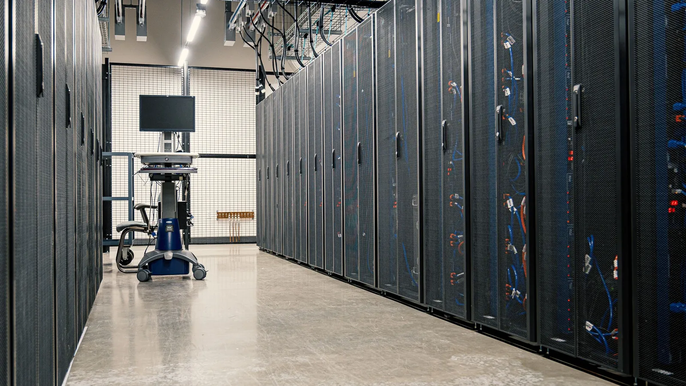

Intel used a data center summit to pitch hardware built for AI agents. For a support team the useful question is smaller: at what volume does running your own model beat renting one, and can your agents change models when you get there?

At the Open Compute Project Global Summit this month, Intel showed rack designs and a new inference card aimed at agent workloads, as reported by Igor's Lab. The card, the GPU D-Series codenamed Crescent Island, is an air-cooled PCIe card drawing 350 watts, with 160 GB of memory as standard and up to 480 GB from partners. Intel says a single card can serve a language model of up to 300 billion parameters, and eight cards can serve one of more than a trillion.
Customer sampling has started, so this is not something you can order today. Read it as a chip vendor going after inference spending, with a specific pitch: running large models in your own building should look like ordinary server hardware, without a special build or liquid cooling. That pitch is aimed at data center operators. It reaches you because it changes the price of an option you may not have considered.
Agents call models far more often than chatbots do. Reading the ticket, looking up the order, drafting a reply and checking the draft are each a separate call, and we covered how fast that adds up in a piece on cost per finished job. When you rent a model by the token, that bill grows with every conversation and every extra step you add.
Owning the hardware turns most of that cost into a fixed one. You pay for the card, the power and someone to look after it, and you pay the same whether it is busy or idle. So the deciding number is your volume and how steady it is. A team handling a few thousand conversations a month will not keep a card busy, and renting stays cheaper. A contact center running steady traffic around the clock might fill one, and then each extra conversation costs very little.
Both ways of getting this wrong cost money. Buy hardware early and you pay for capacity that sits idle. Build every agent so tightly around one hosted model that moving is a rewrite, and you keep paying rental prices after your volume has outgrown them.
CX-Builder is self-hosted, and every step in a flow picks its own model. The model list covers hosted APIs and models you serve yourself, through runtimes like Ollama and LocalAI or any endpoint that speaks the OpenAI format. So the choice between renting and owning does not have to be made once for the whole agent. You make it step by step.
That matters because volume is not spread evenly across an agent. The routine steps (sorting the ticket by topic, summarizing a long thread, pulling an order number out of an email) run on every single conversation. Those are where most calls come from, and where a smaller model is often good enough, which you can test on your own traffic. The step that reasons through a messy refund dispute runs less often, and it can stay on a hosted model for as long as that model does it better.
In CX-Builder the model is a setting on each agent node. Moving the classification step to a model on your own server means changing that node's model and endpoint, while the flow, tools, document stores and approval steps stay as they are. Before you switch, run the same batch of past tickets through both versions and compare the answers. The execution record shows what each step received and returned, so if quality drops, you can see which step caused it.
Don't buy hardware this quarter. Intel's card is still sampling anyway. Do pull your agent's logs and count model calls by step, not by conversation. If one routine step accounts for most of the calls, that is your first candidate for a model you run yourself, and you can test it on a server you already have. And check that your current build can change the model on one step without a rebuild, so the decision stays yours when your volume is ready for it.